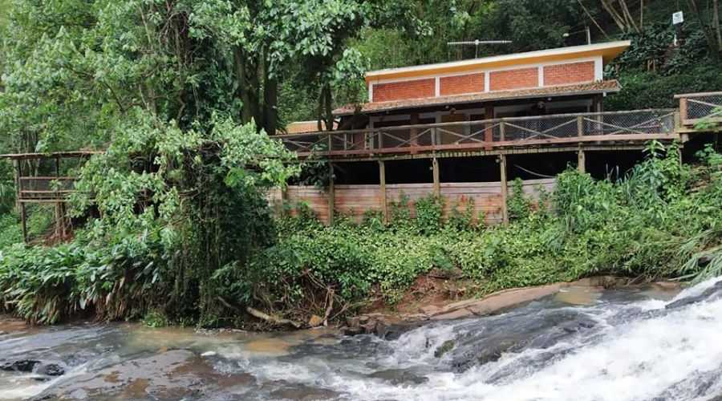
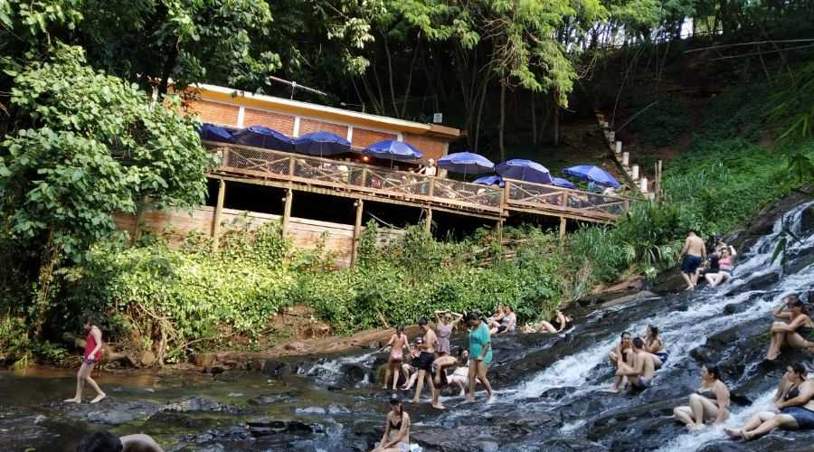

<!DOCTYPE html>
<html lang="pt-br">
</html>
<title>Recanto da Cascata</title>
    <meta charset="UTF-8">
    <meta http-equiv="X-UA-Compatible" content="IE=egde">
    <meta name="viewport" content="width=device-width, initial-scale=1.0 ">
    <link rel="stylesheet" href="index.css">
 </head>

<body>
    <header>
        <div class="center">
          </img>
        </div>
        <h1>Pousada Recanto da Cascata</h1>
      </header>
<main>
<section>
<p>
    O Recanto da Cascata é um dos pontos turísticos mais encantadores de Ribeirão Claro, no estado do Paraná. Este local se destaca por suas belezas naturais e por sua importância histórica e cultural para o município.

    A história do Recanto da Cascata está ligada à exploração e colonização da região de Ribeirão Claro, que começou no final do século XIX e início do século XX. À medida que os colonizadores desbravavam o território, descobriram várias cachoeiras e quedas d'água, que se tornaram marcos naturais importantes para a comunidade local. O Recanto da Cascata foi um desses locais, logo reconhecido por sua beleza cênica e pela abundância de água limpa e fresca.
    
    Com o passar dos anos, o Recanto da Cascata tornou-se um lugar popular para lazer e recreação, tanto para os moradores de Ribeirão Claro quanto para visitantes de outras regiões. As cascatas proporcionam um ambiente perfeito para atividades ao ar livre, como caminhadas, piqueniques e banhos de cachoeira, além de oferecer um refúgio tranquilo e pitoresco da vida urbana.
    
    O local é valorizado não apenas por suas características naturais, mas também por seu papel na história e na cultura local. O Recanto da Cascata representa a ligação da comunidade com a natureza e a importância da preservação ambiental. Ao longo dos anos, foram realizados esforços para conservar o ambiente natural do recanto, garantindo que ele continue sendo um espaço de beleza e tranquilidade para as futuras gerações.
    
    Atualmente, o Recanto da Cascata é um destino turístico bem estabelecido, conhecido por sua impressionante paisagem natural e por ser um exemplo de turismo sustentável em Ribeirão Claro. Ele continua a atrair turistas em busca de contato com a natureza, relaxamento e a oportunidade de explorar as maravilhas naturais do município.
    
    A história do Recanto da Cascata é, portanto, uma história de descoberta, valorização e preservação da natureza, refletindo o compromisso de Ribeirão Claro com a conservação ambiental e a promoção do turismo ecológico.
</p>
</section>
</main>
,<section>
 <p>
  Turismo e Hospitalidade,

o Recanto da Cascata é um ponto turístico em crescimento, e isso gera várias oportunidades na área de turismo e hospitalidade:

Guias de Turismo: Profissionais que conduzem visitantes pelas trilhas, cachoeiras e pontos de interesse, fornecendo informações sobre a fauna, flora e história local.
Recepcionistas e Funcionários de Hospedagem: Para trabalhar em pousadas, chalés e outras acomodações, oferecendo um serviço de qualidade e informações úteis para os turistas.
Gerentes de Turismo: Para coordenar atividades turísticas, desenvolver pacotes e promover o Recanto da Cascata como um destino turístico.
Preservação Ambiental e Ecoturismo

A preservação ambiental é fundamental para manter a beleza natural do Recanto da Cascata. As oportunidades nesta área incluem:

Biólogos e Ambientalistas: Para realizar estudos sobre a biodiversidade local, desenvolver e implementar projetos de conservação e monitorar o impacto das atividades humanas na região.
Guardiões de Parque ou Rangers: Responsáveis pela proteção das áreas naturais, manutenção das trilhas e educação ambiental dos visitantes.
Engenheiros Ambientais: Para projetar e implementar práticas que minimizem o impacto ambiental das operações turísticas e outras atividades.
Agricultura e Produção Local

A produção de alimentos e produtos locais também é uma área de interesse, proporcionando oportunidades como:

Agricultores e Produtores Locais: Para cultivar produtos que atendem às demandas dos turistas e das comunidades locais, como hortaliças, frutas e produtos artesanais.
Artisans e Produtores de Produtos Regionais: Para desenvolver e comercializar produtos típicos, como artesanato local e alimentos especiais.
Infraestrutura e Manutenção

O desenvolvimento e a manutenção da infraestrutura são essenciais para o sucesso do Recanto da Cascata:

Engenheiros Civis e Arquitetos: Para projetar e supervisionar a construção e a manutenção de estradas, trilhas e outras estruturas necessárias para o turismo e a acessibilidade.
Técnicos de Manutenção: Para cuidar da manutenção e reparo de instalações, trilhas e áreas públicas.
Educação e Treinamento

A educação contínua é importante para a capacitação da equipe e o engajamento com a comunidade:

Educadores Ambientais e Instrutores: Para ministrar workshops e programas educativos sobre conservação, práticas sustentáveis e turismo responsável.
Consultores de Desenvolvimento Comunitário: Para implementar programas que beneficiem tanto os visitantes quanto os residentes locais, promovendo a integração e o desenvolvimento sustentável.
Benefícios e Qualidade de Vida
Trabalhar no Recanto da Cascata oferece uma série de benefícios. A região proporciona um ambiente de trabalho imersivo na natureza, com a oportunidade de contribuir para a conservação ambiental e o desenvolvimento do turismo sustentável. Além disso, a comunidade de Ribeirão Claro é acolhedora e tem um forte sentido de cooperação e pertencimento.

A qualidade de vida na região é enriquecida pela proximidade com áreas verdes e a tranquilidade do ambiente rural. Os profissionais que trabalham no Recanto da Cascata têm a chance de viver em um cenário natural deslumbrante, participar ativamente da preservação ambiental e promover um destino turístico em ascensão.
Voltado ao turísmo temos uma aconchegante pousada local e um ótimo restaurante. 
Em resumo, o Recanto da Cascata em Ribeirão Claro, PR, oferece uma variedade de oportunidades de trabalho em turismo, preservação ambiental, infraestrutura e mais. A região não só proporciona uma experiência de trabalho gratificante em meio à natureza, mas também contribui para o desenvolvimento sustentável e a valorização das riquezas naturais locais.
</p>
</section>
<div class="center">
  </img>
</body>